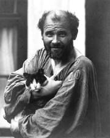
Gustav Klimt
One of the founding members of the Vienna Secession, or Vienna's art nouveau pioneers, Gustav Klimt was very much in the public eye by 1898 when we first encounter him. He was already famous, or infamous, for his highly erotic paintings. Even his more staid society portraits were filled with an almost palpable erotic charge. Upon his death in 1918 it was discovered why: it seemed Klimt began his portraits as a nude, then layer by layer of paint he "dressed" these society women. Klimt makes appearances in several of the Viennese Mystery books.
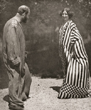
Emilie Flöge
Klimt and his great friend and mistress, Emilie Flöge, the designer, enjoyed shocking the staid Viennese with their reform dress: loose-fitting smocks for both men and women.
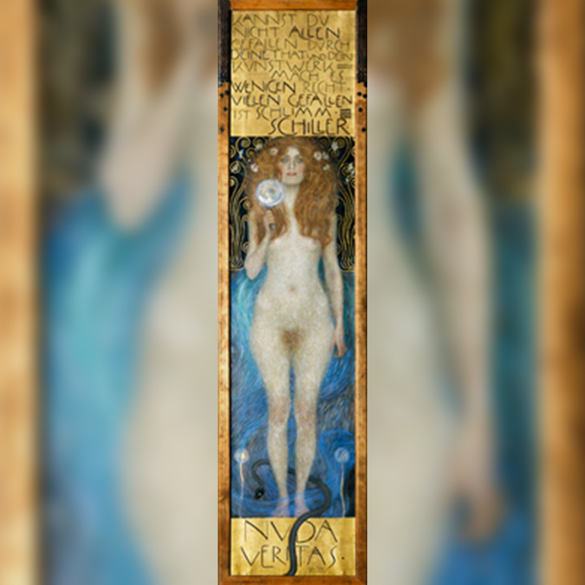
Nuda Veritas (painting)
Klimt's Nuda Veritas, whose model was at the center of the storm in The Empty Mirror. The young woman holds an empty mirror up to the viewer as if to ask what that person will see reflected: the truth of the world or merely one's own image?
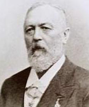
Richard von Krafft-Ebing
Richard von Krafft-Ebing, author of Psychopathia Sexualis, lends a hand in The Empty Mirror to profile Vienna’s serial killer.
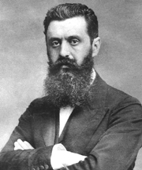
Theodor Herzl
Theodor Herzl, founder of Zionism, also lends a hand in The Empty Mirror.
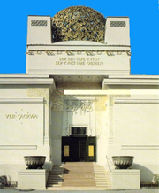
The Secession (building)
The Secession was built as the gallery for the new breed of artists gathered around Gustav Klimt. Its motto, emblazoned in gold leaf on the façade, is, Der Zeit ihre Kunst, der Kunst ihre Freiheit (To the age its art, to art its freedom).
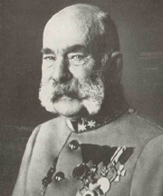
Franz Josef
Franz Josef, the grand old man of Austria, emperor from 1848 to 1916.
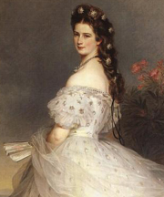
Empress Elisabeth
Empress Elisabeth, the most beautiful woman in Europe, according to her admirers, a poor companion for an emperor, according to her detractors.
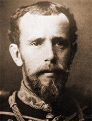
Archduke Rudolf
Archduke Rudolf died in Mayerling in 1889; an enigmatic and troubled young man.
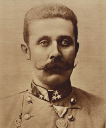
Archduke Franz Ferdinand
Archduke Franz Ferdinand, heir apparent to the Austrian throne.
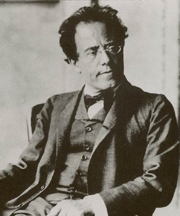
Gustav Mahler
Gustav Mahler was one of the youngest directors Vienna's Court Opera ever had. Just thirty-seven when he took over that position in 1897, he soon transformed the opera, ridding it of useless tradition and insisting upon punctual arrival by the audience. His high-handedness earned him numerous enemies, one of whom seems intent on killing the composer in the second installment of the series, Requiem in Vienna.
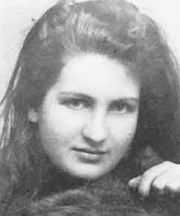
Alma Schindler
Alma Schindler (later Mahler/Gropius/Werfel) as a young woman with her eyes already set on capturing the artistic Gustav Mahler in Requiem in Vienna.
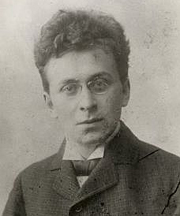
Karl Kraus
The young journalist and social critic, Karl Kraus. He knows where all the bodies are buried in Vienna, and is a font of information for Advokat Werthen in Requiem in Vienna.
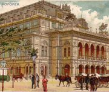
Vienna Court Opera (building)
The Vienna Court Opera figures prominently in Requiem in Vienna. The first of the Ringstrasse buildings to be opened, the Court Opera had an inauspicious beginning: both of its architects died shortly before the official opening.